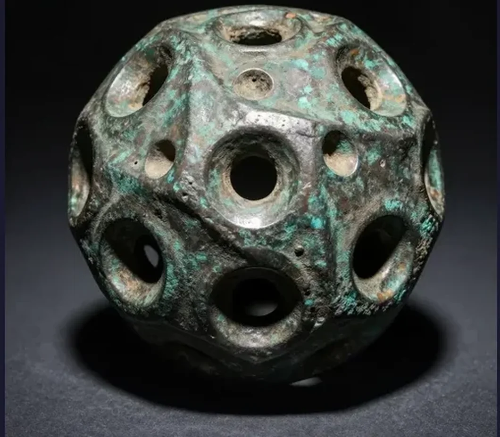
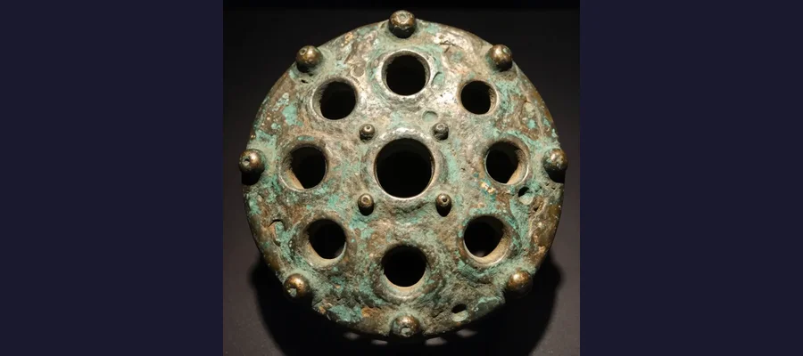
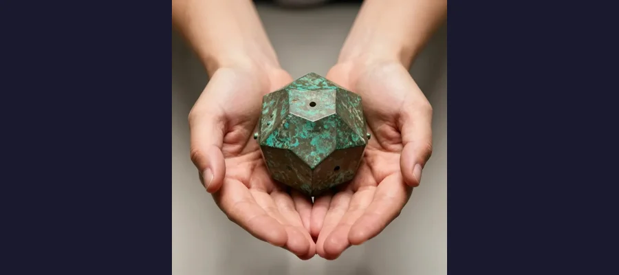

The Roman Dodecahedron: Ancient Mystery That Still Baffles Experts

One of over 130 mysterious dodecahedrons found across Europe. What was its purpose?
Imagine finding a strange 12-sided bronze object with circular holes of different sizes on each face. Now imagine finding over 130 of them scattered across the Roman Empire, from England to Hungary - and having absolutely no idea what they were used for. Welcome to one of archaeology's greatest unsolved puzzles.
Overview
What Are These Strange Objects?
Roman dodecahedrons are hollow, 12-sided geometric shapes made of copper alloy (bronze). Each face is a pentagon with a circular hole in the center, and each hole is a different size. The corners are decorated with small knobs or spheres. They typically measure between 4 and 11 centimeters across - roughly the size of a tennis ball to a grapefruit.

The intricate design features different-sized holes and corner knobs, all crafted with remarkable precision.
🕐 First Discovery in 1739
The first dodecahedron was unearthed in Aston, Hertfordshire, England in 1739. Nearly 300 years later, we still don't know what they were for!
Evidence
Historical work on The Roman Dodecahedron is strongest when primary records, material traces, and later peer-reviewed analysis point in the same direction. This layered approach helps separate observations from retellings and reduces the risk of repeating popular but unsupported claims.
Where Have They Been Found?
These mysterious objects have been discovered throughout the northwestern provinces of the Roman Empire. England has yielded 33 dodecahedrons, while others have been found in France, Germany, Belgium, Netherlands, Switzerland, Austria, and Hungary. Interestingly, none have ever been found in Italy or other Mediterranean regions of the Roman Empire.
📍 A Regional Mystery
All dodecahedrons have been found in Roman Britain and Gaul (modern France and surrounding areas) - never in Rome itself or the eastern empire!

Most dodecahedrons fit comfortably in your hand, suggesting they were meant to be portable tools or devices.
Competing Explanations
Competing explanations usually persist because each one fits part of the evidence while missing another part. Researchers test these models against chronology, physical constraints, and independent documentation to identify which interpretation requires the fewest assumptions.
Theories and Speculations
Archaeologists and historians have proposed dozens of theories over the centuries, but none has been definitively proven:
Astronomical calculators: Some believe the different-sized holes could be used to calculate sun positions or track seasons for farming.
Religious or magical objects: The elaborate design and regional distribution suggest possible ritual significance.
Military devices: Could they have been used for ranging distances or calibrating artillery?
Textile tools: Perhaps they helped create intricate knotted patterns or measure yarn.
❓ No Written Records
Despite the Romans being excellent record-keepers, no ancient text, inscription, or image has ever mentioned or depicted a dodecahedron!
Open Questions
Open questions remain because source quality is uneven across time: some records are direct and detailed, while others are fragmentary or second-hand. Future archival discoveries, improved imaging, and more precise dating methods may refine conclusions without overturning well-supported core findings.
Why Can't We Solve This Mystery?
Part of the challenge is that dodecahedrons weren't found in obvious contexts like temples, workshops, or graves. Many were discovered by metal detectorists in fields, making it hard to understand their original purpose. Additionally, they date from the 2nd to 4th centuries CE, a period from which fewer written records survive.
🔬 Latest Discovery in 2024
A perfectly preserved dodecahedron was found in Norton Disney, England in summer 2023 and made headlines in 2024. It's one of the best examples ever discovered!
The Roman dodecahedron remains one of those wonderful historical mysteries that reminds us how much we still have to learn about the past. Perhaps one day, a lucky discovery will finally reveal their true purpose - until then, they continue to captivate our imagination.
References & Further Reading
Editorial note: We cross-check claims across multiple independent sources. See our Editorial Policy.